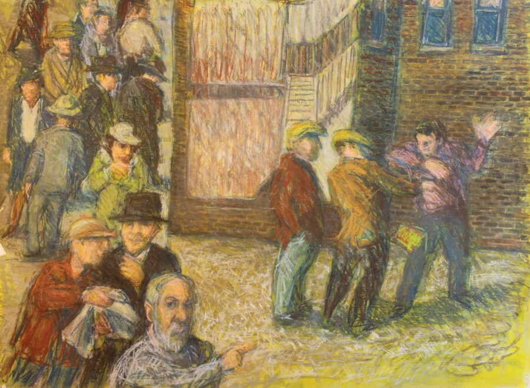

Leopold Segedin: Unframed
Leopold Segedin began painting in 1942. In a career that spanned nine decades he painted myriad subjects and themes including the bible and mythology, musicians, games, trains, Maine and Michigan landscapes, and self-portraits, but his focus always returned to Chicago. Leo died January 7, 2025 at his Evanston home at the age of 97.
Artistic Statement
I’ve lectured about the works of Da Vinci and Cezanne, but — as a painter — I am reluctant to talk about my own work. I’ve always felt that my paintings should speak for themselves. Words can point to what you should look at and create a context for what you should see, but I don’t think that anyone can really communicate in words what works of art communicate any more than they can create in words the taste of a good wine. The experiences of striking colors, of delicate lines and bold shapes — especially, as they create dramatic, metaphoric images — are like — well — the tang of garlic in a good, Vienna hot dog — if we can imagine such experiences as being more serious — more profound — than pleasurable. Paintings have to be “tasted” to be known. It is not an intellectual process, although some art critics have made their careers trying to describe and explain it. The meaning – the significance of a painting — is in the work itself — in the personal responses to the aesthetic and metaphoric qualities of the image.
I am especially fascinated by the quality of light in Chicago – not only sunlight or the cold light of a cloudy day – but also by the different kinds of light — from bedroom and kitchen windows – storefronts — back porches – streets and ‘L’ platforms. Jerusalem and Venice have nothing on Chicago. I remember the golden glow of evening light on building facades and streets — but the light now is different…. more neon, fluorescent, halogen. I remember when — at night — you could see the Milky Way over Chicago. You could actually read by starlight.
In my paintings of old Chicago spaces, I try to create an experience – a particular taste, if you will — of my memory. I try to paint with the sense that so much of the world in which I lived – a world that I once took for granted — has disappeared. I remember that the neighborhood of my childhood was full of people, but all those people are gone — moved out — died. So the streets in many of my paintings are empty, but those spaces are still there. The empty rooms — the streets and sidewalks I paint — remind me of the people who once lived and walked there. Gritty side brick and wallpaper embody the passage of time on their surfaces and thus remind me of the passage of my own life.